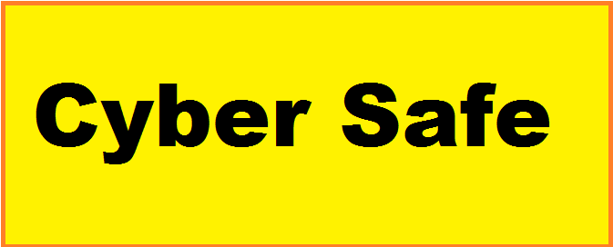

...My Idea of a Safe and Peaceful Cyber Space...

Why Cyber Security?
Cybersecurity is the practice of protecting systems, networks, and programs from digital attacks. It is important because it protects all categories of data from theft and damage. Cyber security is a subfield of computer science.
What does CS refer to?
CS-Computer Science
CS-Cyber Space
CS-Cyber Security
CS(S)-Cascading Style (Sheets)
Amazing [Homonym]...